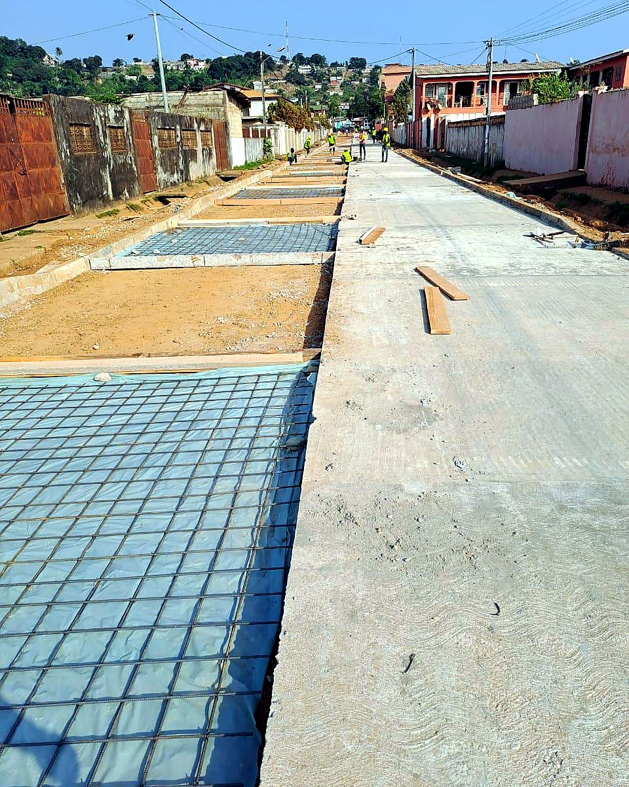

Construction de voiries secondaires
Création ou réhabilitation de routes de quartier, voies communales, accès d'activité et plateformes de circulation. L'objectif est de faciliter les déplacements quotidiens avec des ouvrages adaptés au trafic réel et au climat local.
